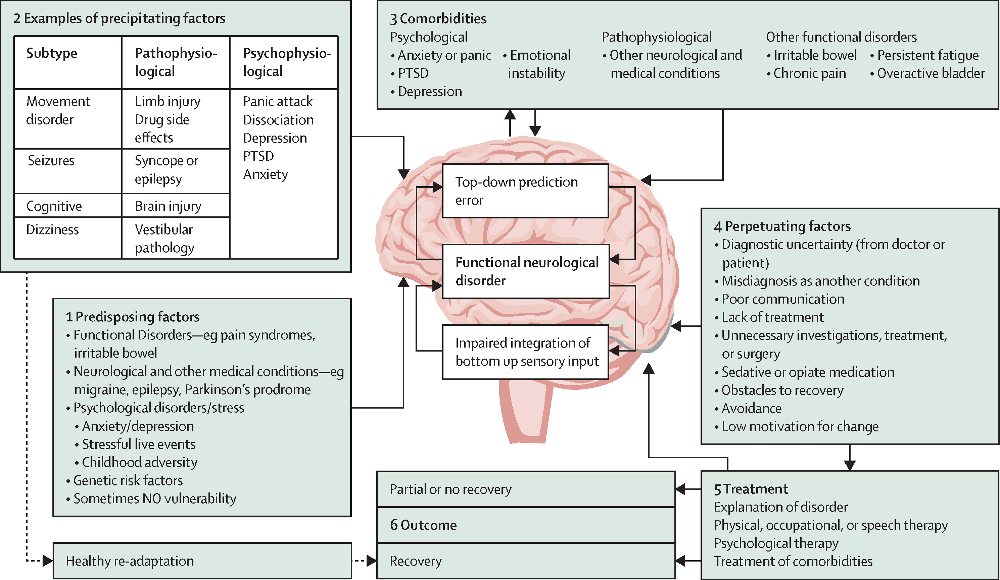
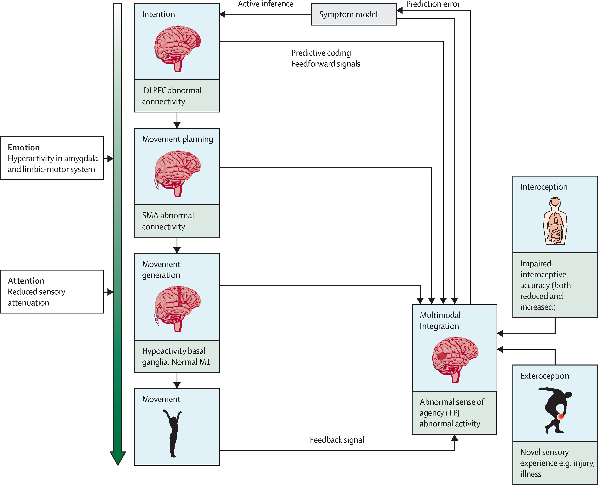

Pathophysiologie
Biopsychosoziales Modell

Risikofaktoren beinhalten psychologischen Stress und Kindheitstraumata, besonders Vernachlässigung.
Hierbei ist jedoch zu beachten, dass in vielen Studien diese Faktoren manchmal in nicht mehr als
50% der Fälle genannt werden.
Die Tatsache, dass Frauen häufiger betroffen sind, könnte durch die höhere Exposition zu Kindheitstraumata begründet werden.
Jedoch sind Frauen auch von anderen Erkrankungen (z.B. Multiple Sklerose) häufiger betroffen.
Bei Kindern können Familiendysfunktionen, Mobbing, Gruppenzwang und manchmal auch Misshandlung Risikofaktoren darstellen.
FND ist häufig begleitet von anderen psychiatrischen Erkrankungen wie Depressionen, Angststörungen, PTBS und Persönlichkeitsstörungen (Cluster B). Auch andere funktionelle Symptome wie chronische Schmerzen und Fatigue sind häufig, was auf gemeinsame Mechanismen hinweist.
Genetische Faktoren können ebenfalls ein Risikofaktor sein.
In dem Bild kann man diese und andere Faktoren sehen und wie sie miteinander zusammenhängen.
Die Tatsache, dass Frauen häufiger betroffen sind, könnte durch die höhere Exposition zu Kindheitstraumata begründet werden.
Jedoch sind Frauen auch von anderen Erkrankungen (z.B. Multiple Sklerose) häufiger betroffen.
Bei Kindern können Familiendysfunktionen, Mobbing, Gruppenzwang und manchmal auch Misshandlung Risikofaktoren darstellen.
FND ist häufig begleitet von anderen psychiatrischen Erkrankungen wie Depressionen, Angststörungen, PTBS und Persönlichkeitsstörungen (Cluster B). Auch andere funktionelle Symptome wie chronische Schmerzen und Fatigue sind häufig, was auf gemeinsame Mechanismen hinweist.
Genetische Faktoren können ebenfalls ein Risikofaktor sein.
In dem Bild kann man diese und andere Faktoren sehen und wie sie miteinander zusammenhängen.
Mechanismus

Was zeigt dieses Bild?
Dieses Schema bezieht sich auf die funktionelle Bewegungsstörung, aber seine Prinzipien sind auf alle funktionellen neurologischen Störungen anwendbar. Bewegungen werden vom motorischen Kortex nach Planung und Vorbereitung im supplementär-motorischen Areal (SMA) generiert. Die Planung und Vorbereitung der Bewegung erzeugen Feedforward-Signale, die nach der Aktion mit Feedback von interozeptiven und externen Signalen verglichen werden. Wenn die Signale nicht übereinstimmen, wird die Bewegung nicht als freiwillig wahrgenommen. Das Gehirn hat ein Modell des Körpers und der Welt, das prädiktive Kodierung zu dieser multimodalen Integration hinzufügt. Feedback-Signale, die nicht mit der prädiktiven Kodierung übereinstimmen, erzeugen einen Vorhersagefehler, der das Modell so modifiziert, dass die prädiktive Kodierung mit dem nachfolgenden Feedback übereinstimmt. Bei funktionellen neurologischen Störungen wird angenommen, dass der Vorhersagefehler nicht genau aktualisiert wird, was die Dysfunktion aufrechterhält. Der grüne Pfeil zeigt, dass es mehrere allgemeine Einflüsse auf die Bewegungsgenerierung gibt, einschließlich Emotion und Aufmerksamkeit. DLPFC = dorsolateraler präfrontaler Kortex. SMA = supplementär-motorisches Areal. M1 = primäres motorisches Areal. rTPJ = rechter temporoparietaler Übergang.
Ein wichtiger Punkt bei FND ist der teilweise Verlusst der willkürlichen Kontrolle über den eigenen
Körper.
Dieses Symptom kann am besten anhand des prädiktiven Kodierungsmodells erklärt werden. Wird eine Bewegung geplant, wird ein motorisches Kommando an den motorischen Kortex im Gehirn gesendet, welcher dann die Bewegung ausführt. Parallel dazu wird ein Feedforward Signal an das Handlungsnetzwerk (agency network) gesendet.
Nachdem die Bewegung ausgeführt wurde, erhält dieses Netzwerk ein Feedback über die Bewegung. Dann wird ein Vergleich zwischen dem Feedforward und Feedback Signal durchgeführt.
Passen beide Signale zusammen, entsteht das sogenannte "sense of agency" (Handlungsempfinden).
Viele Studien deuten auf einen Mechanismus eines gestörten Handlungsempfindens hin, wobei Neuroimaging-Studien auf eine abnormale Aktivierung des rechten temporoparietalen Übergangs hinweisen. Die Evidenz deutet auf eine Übergewichtung der Feedforward-Signale unter dem Einfluss früherer Erwartungen, Aufmerksamkeit und Emotionen hin.
Ein elektrophysiologisches Experiment lieferte Hinweise auf eine langsame sensorische Informationsverarbeitung, was auf eine reduzierte Aufmerksamkeitszuteilung für objektive Körpersignale hindeutet. Dies könnte den Übergang zu einem überbetonten Feedforward-Signal erklären.
Es kann postuliert werden, dass Aufmerksamkeit eine Rolle bei der Filterung des Feedback-Signals während der multimodalen Integration spielt. Eine abnorm erhöhte Aufmerksamkeit auf das Symptom erklärt, warum bewusste Bewegungen (z.B. das Heben des Beins) schwerer auszuführen sind als automatische Bewegungen, da ein anderes motorisches Programm beteiligt ist.
Dieses Symptom kann am besten anhand des prädiktiven Kodierungsmodells erklärt werden. Wird eine Bewegung geplant, wird ein motorisches Kommando an den motorischen Kortex im Gehirn gesendet, welcher dann die Bewegung ausführt. Parallel dazu wird ein Feedforward Signal an das Handlungsnetzwerk (agency network) gesendet.
Nachdem die Bewegung ausgeführt wurde, erhält dieses Netzwerk ein Feedback über die Bewegung. Dann wird ein Vergleich zwischen dem Feedforward und Feedback Signal durchgeführt.
Passen beide Signale zusammen, entsteht das sogenannte "sense of agency" (Handlungsempfinden).
Viele Studien deuten auf einen Mechanismus eines gestörten Handlungsempfindens hin, wobei Neuroimaging-Studien auf eine abnormale Aktivierung des rechten temporoparietalen Übergangs hinweisen. Die Evidenz deutet auf eine Übergewichtung der Feedforward-Signale unter dem Einfluss früherer Erwartungen, Aufmerksamkeit und Emotionen hin.
Ein elektrophysiologisches Experiment lieferte Hinweise auf eine langsame sensorische Informationsverarbeitung, was auf eine reduzierte Aufmerksamkeitszuteilung für objektive Körpersignale hindeutet. Dies könnte den Übergang zu einem überbetonten Feedforward-Signal erklären.
Es kann postuliert werden, dass Aufmerksamkeit eine Rolle bei der Filterung des Feedback-Signals während der multimodalen Integration spielt. Eine abnorm erhöhte Aufmerksamkeit auf das Symptom erklärt, warum bewusste Bewegungen (z.B. das Heben des Beins) schwerer auszuführen sind als automatische Bewegungen, da ein anderes motorisches Programm beteiligt ist.